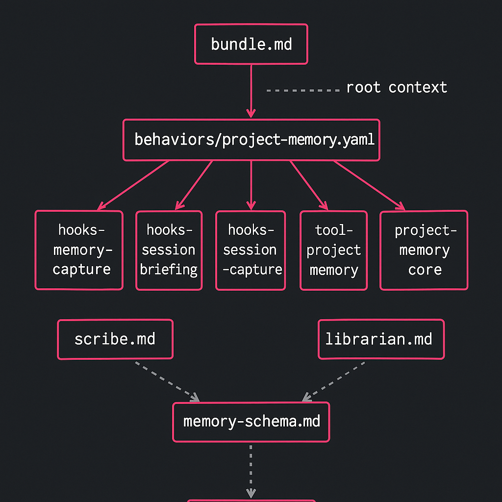
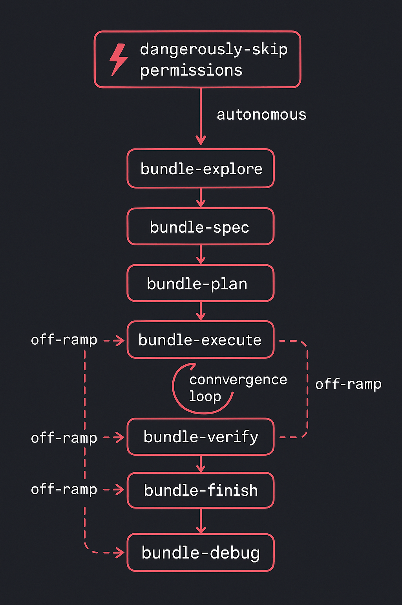

Amplifier Ecosystem
bundlewizard
The machine that makes machines.
An AI-powered bundle factory — from concept to working product in a single session.
Active
March 2026
Act 1 · Visual Contract
Architecture: DOT Visual Contract

Every bundle bundlewizard generates includes an evolving architecture diagram.
The explorer creates it, spec-writer refines it, generator finalizes it,
and the critic validates every node has a matching file.
Act 2 · The Design
Build new. Don't bolt on.
A 10-section validated design chose the hybrid approach: a shared factory-core
architecture (Approach C) combined with harness-machine's proven convergence loop for quality
control (Approach A). Built as a standalone bundle — don't abstract until you have two consumers.
🏭 Factory Core
Shared architecture with internal factory patterns structured for future extraction.
🔄 Convergence Loop
Generate → Critique → Refine → Evaluate. Proven by harness-machine, now generalized.
🔀 Three-Path Fork
Create new / Improve existing / Rebuild from reference — one tool, three entry points.
🎯 Adaptive Interview
Detects user experience from vocabulary. Never asks "are you a beginner?" directly.
⚡ Two-Track UX
Interactive modes for hands-on exploration. Recipes for automation and CI/CD.
⚠️ /dangerously-skip-permissions
Amplifier builds its own capabilities when it hits a gap. Machine quality gates still enforced.
Act 2 · Architecture
10 specialist agents.
One assembly line.
Each agent fills an abstract pipeline slot with a specific specialty.
The pipeline flows from understanding to delivery:
explorer
→
spec-writer
→
plan-writer
→
generator
→
critic
→
refiner
→
evaluator
→
packager
Plus auditor and ecosystem-scout working in parallel.
Three-level convergence
Structural
Pass / Fail — does the bundle have the required files and valid YAML?
Binary gate
Philosophical
Scored 0–1 — does it follow Amplifier principles? Threshold: 0.85
Threshold: 0.85
Functional
Scored 0–1 — does the bundle actually work when loaded? Threshold: 0.80
Threshold: 0.80
Act 2 · Visual Contract
The evolving DOT diagram.
Every pipeline phase refines a living architecture diagram. The critic validates it.
This is the visual contract — what the bundle is, continuously updated.
// Simplified DOT — each phase adds detail
digraph bundle {
rankdir=LR
// Phase 1: Explorer discovers structure
user -> interview -> routing_fork
// Phase 2: Generator builds components
routing_fork -> {create improve rebuild}
// Phase 3: Evaluator validates convergence
create -> convergence_loop -> delivery
}
Act 3 · The Build
41 tasks. 3 phases.
39 files shipped.
Phase 1 · Foundation
18 files
bundle.md, behavior YAML, 6 context files, 8 modes, 3 templates — the skeleton of the factory.
Phase 2 · Agents
10 agent definitions
Each with full WHY / WHEN / WHAT / HOW descriptions. Every agent knows its role and boundaries.
Phase 3 · Integration
Recipes, Skills, Docs
5 recipes for automation, 2 skills for reuse, 2 docs for humans. The complete package.
# The bundle structure
amplifier-bundle-bundlewizard/
├── bundle.md # Identity & philosophy
├── behavior.yaml # Modes, agents, recipes
├── agents/ # 10 specialist agents
│ ├── explorer.md
│ ├── spec-writer.md
│ ├── plan-writer.md
│ ├── generator.md
│ ├── critic.md
│ ├── refiner.md
│ ├── evaluator.md
│ ├── packager.md
│ ├── auditor.md
│ └── ecosystem-scout.md
├── modes/ # 8 operational modes
├── recipes/ # 5 automation recipes
├── skills/ # 2 reusable skills
├── context/ # 6 context files
└── templates/ # 3 starter templates
Act 4 · First Test
The factory's first product:
project-memory
Bundlewizard's real test: generate a complete project-memory bundle from scratch.
The pipeline ran end-to-end — explore, spec, plan, execute, converge.
🔍 Explore → Spec
Adaptive interview detected the user's experience. Produced a 567-line specification capturing every requirement.
📋 Plan → Execute
Generated a 1,397-line implementation plan. Parallel agent dispatch. Flawless execution through the pipeline.
# What the pipeline produced
✓ 5 Python modules (596 lines of core library code)
✓ 3 hook modules (capture, briefing, end-capture)
✓ 1 tool module (6 operations)
✓ 2 agents (scribe + librarian, full WHY/WHEN/WHAT/HOW)
✓ 223 tests (ALL passing in 0.44 seconds)
✓ Clean git history (10 commits)
✓ Self-evaluation (level_score: 0.94, critic_verdict: PASS)
Act 4 · Mode Topology
Mode Topology

8 modes form the pipeline. Auto-transitions advance the flow.
bundle-debug is the universal off-ramp. /dangerously-skip-permissions
bypasses human approval gates while keeping machine quality gates enforced.
Act 5 · Learning
7 fixes applied.
The system gets smarter.
Every issue from the test run was fixed immediately.
This is the convergence philosophy in action — build, test, learn, improve.
🎯
Focus Discipline
Added CRITICAL blocks to all 10 agents forbidding skill loading during pipeline execution. No more irrelevant distractions.
🔄
Auto-Transition
Modes now transition automatically instead of asking users to type /bundle-X. Smoother flow.
📂
Path Resolution Warning
Generator now knows behavior YAML paths resolve relative to the behavior file's directory, not the repo root.
🧪
Runtime Verification
Evaluator must attempt a real bundle load before declaring Level 1 PASS. No more self-validating claims.
📦
Delivery Requirements
Packager must include install command, test prompts, and what to watch for. No terse handoffs.
🔧
Harness-Machine Fixes
Fixed pattern.md double-load bug and hardcoded GitHub URL in the parent project too.
Act 5 · Bonus
Also shipped
in this session.
🔀 Path C: Rebuild from Reference
Third routing path added to the fork — take an existing bundle, analyze what works, rebuild it from scratch with improvements. Complete the create / improve / rebuild triad.
🏗️ Factory-Core Extraction Plan
Created the plan for harness-machine's future refactor — extracting shared factory patterns so both harness-machine and bundlewizard share a common core.
📊 Evolving DOT Diagram
Architecture diagram that lives across all pipeline stages — every phase refines it, the critic validates it. Visual contract for what the bundle becomes.
🐛 Harness-Machine Bug Fixes
Fixed pattern.md double-load and templatized the hardcoded GitHub URL in generated artifacts. Upstream improvements.
Philosophy
The machine that
makes machines.
Bundlewizard embodies the Amplifier philosophy:
Mechanism, Not Policy
The pipeline defines how bundles converge, not what they must contain. Any bundle shape fits the factory.
Bricks and Studs
10 agents, each a single brick. They compose through the pipeline — not through inheritance or tight coupling.
Ruthless Simplicity
One bundle. Internal patterns. Don't abstract until you have two consumers. Ship, learn, extract later.
Vision
/dangerously-skip-permissions
The most radical design decision: when Amplifier hits a capability gap,
it can build its own tools. The /dangerously-skip-permissions mode
lets the AI extend itself — with machine quality gates still enforced.
# The self-improvement loop
1. Amplifier encounters a task it can't do
2. /dangerously-skip-permissions activates
3. Bundlewizard generates a new bundle for the capability
4. Convergence loop validates: structural ✓ philosophical ✓ functional ✓
5. New capability available immediately
# The constraint: quality gates are never skipped
# Only the permission to CREATE is granted, not the permission to ship garbage
AI that builds its own capabilities when it hits a gap.
That's the endgame.
Velocity
Single-session build.
Test Output
project-memory:
the factory's proof.
| Metric | Value |
|---|
| Python modules | 5 (596 lines of core library code) |
| Hook modules | 3 (capture, briefing, end-capture) |
| Tool modules | 1 with 6 operations |
| Agents | 2 (scribe + librarian) |
| Tests | 223 — all passing in 0.44s |
| Git commits | 10 with clean history |
| Convergence score | 0.94 (threshold: 0.85) |
| Critic verdict | PASS |
| Total files | ~35 |
One factory run. One complete, tested, documented bundle.
The spec was 567 lines. The plan was 1,397 lines.
The output works.
Sources
Sources & Methodology
Data as of: March 17, 2026
Feature status: Active
Data sources:
- • Session transcript: all stats, design decisions, and test results were provided directly by the session author (Michael Jabbour) from the build session
- • File counts (39 bundlewizard files, ~35 project-memory files): from session records of files created and pushed
- • Test results (223 tests, 0 failures, 0.44s): from pytest output during the test run
- • Convergence score (0.94): from bundlewizard's self-evaluation metadata stamp
- • Line counts (567-line spec, 1,397-line plan, 596 lines core): from session output
Repositories:
- •
michaeljabbour/amplifier-bundle-bundlewizard
- •
michaeljabbour/amplifier-bundle-project-memory (test output)
- •
michaeljabbour/amplifier-bundle-harness-machine (bug fixes + plans)
Primary contributor: Michael Jabbour (sole author — single-session build)
Gaps & caveats:
- • The convergence score (0.94) is a self-evaluation by the bundlewizard pipeline — not an independent assessment
- • "~35 files" for project-memory is approximate; exact count was not tallied
- • "Single session" refers to one extended working session — exact wall-clock duration not recorded
- • The test run exposed 3 issues (critic timeout, path bug, terse finish) that required fixes — the numbers above reflect the state after the initial generation, before fixes
Get Started
Build your own
bundle.
The factory is open. The pipeline is ready.
Point bundlewizard at a problem and watch it build.
📦 Bundlewizard
github.com/michaeljabbour/amplifier-bundle-bundlewizard
🧠 Project Memory
github.com/michaeljabbour/amplifier-bundle-project-memory
🏭 Harness Machine
github.com/michaeljabbour/amplifier-bundle-harness-machine
More Amplifier Stories